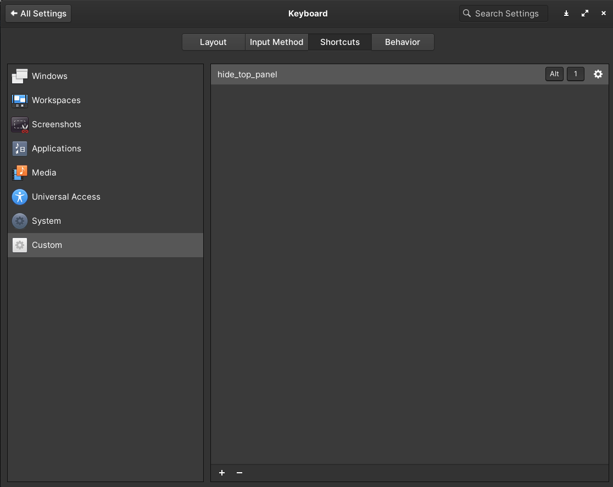

Bash shell tips and trics
Hiding top panel in elementaryOS
To hide the top panel in elementaryOS the shell script below have to be saved to a text file and named withouth any file extension:
#!/bin/bash
result=`ps aux | grep -i "io.elementary.wingpanel" | grep -v "grep" | wc -l`
if [ $result -ge 1 ]
then
killall io.elementary.wingpanel &> /dev/null;
killall io.elementary.wingpanel &> /dev/null;
killall io.elementary.wingpanel &> /dev/null;
else
io.elementary.wingpanel &> /dev/null &
fi
Change the file permission so it can be executed by the user:
chmod 755 hide_top_panel
Save the file to /bin.
Add a custom shortcut to elementaryOS. Go to System Settings -> Hardware -> Keyboard -> Shortcuts tab -> Custom. Select a keyboard shortcut of you preference and use the same name as the file name in /bin.
